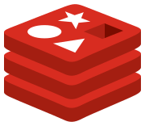
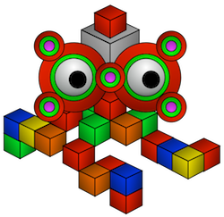

Introduction à NoSQL
Que veut dire NoSQL ?
- No structure QL
- Not SQL
- Not only SQL
- New SQL (en danois)
Que veut dire NoSQL ?
- No structure QL
- Not SQL
- Not only SQL
- New SQL (en danois)
SQL (Rappel)
SQL signifie
Structured Query Language
SQL est un langage déclaratif de manipulation de données relationnelles.
CREATE TABLE table(attribut(s)) ;
INSERT INTO table VALUES tuple ;
| Rang | Nom | Taille | Poids |
|---|---|---|---|
| #001 | Bulbizarre | 0.7m | 6.9kg |
| #004 | Salamèche | 0.6m | 8.5kg |
| #007 | Carapuce | 0.5m | 9.0kg |
| #025 | Pikachu | 0.4m | 6.0kg |
| #052 | Miaouss | 0.4m | 4.2kg |
| Rang | Type |
|---|---|
| #001 | Plante |
| #001 | Poison |
| #004 | Feu |
| #007 | Eau |
| #025 | Électrik |
Pokémon = {
(#001, Bulbizarre, 0.7, 6.9),
(#004, Salamèche, 0.6, 8.5),
(#007, Carapuce, 0.5, 9.0),
(#025, Pikachu, 0.4, 6.0),
(#052, Miaouss, 0.4, 4.2)
}
SELECT attribut(s)
FROM table(s)
WHERE condition(s) ;
(Q1) Quel est le nom des Pokémon de type feu ?
SELECT Nom
FROM Pokémon AS P,
Pokémon Type AS PT
WHERE P.Rang = PT.Rang AND
Type = Feu ;
Un schéma de base de données peut être soumis à des dépendance fonctionnelle.
Une clé primaire est un attribut duquel dépend fonctionnellement tous les attributs d'une table.
Le rang d'un Pokémon détermine son nom, sa taille et son poids.
Rang → (Nom, Taille, Poids)
Un schéma normalisé garantit l'absence d'incohérences dans les données.
| Rang | Nom | Taille | Poids | Type |
|---|---|---|---|---|
| #001 | Bulbizarre | 0.7m | 6.9kg | Plante |
| #001 | Bulbizarre | 0.7m | 6.8kg | Poison |
| #004 | Salamèche | 0.6m | 8.5kg | Feu |
| #007 | Carapuce | 0.5m | 9.0kg | Eau |
| #025 | Pikachu | 0.4m | 6.0kg | Électrik |
| #052 | Miaouss | 0.4m | 4.2kg |
Avec un schéma dénormalisé, la table ci-dessus ne respecte pas la dépendance fonctionnelle
Rang → Poids
Le fondement théorique d'SQL est l'algèbre relationnelle.
Une table (SQL) équivaut à une relation en algèbre relationnelle.
Les (principaux) opérateurs algébriques autorisés sur des relations sont:
- sélection (σ)
- projection (π)
- jointure (⋈)
- renommage (𝛿)
Une requête SQL correspond à une opération algébrique sur une ou plusieurs relations.
Q1 ≡ πNom ( σType = Feu ( P ⋈ PT ) )
Une requête peut être optimisée grâce aux identités algébriques des opérateurs.
πNom ( σType = Feu ( P ⋈ PT ) )
↓
πNom ( P ⋈ σType = Feu ( PT ) )
Une requête peut aussi être optimisée grâce à des index sur les tables.
| Type d'index | Complexité |
|---|---|
| table de hachage | recherche d'élément en O(1) |
| B-arbre | recherche d'élément en O(log2(n)) |
Pourquoi "pas seulement" SQL ?
SQL est de loin le langage de requête le plus utilisé dans les SI.
En 2020, Oracle avait un chiffre d'affaire 100 fois plus élevé que MongoDB, le principal fournisseur de solutions NoSQL.
Le modèle relationnel est de loin le plus établi en informatique théorique.
Les travaux les plus significatifs en base de données sont ceux de E. F. Codd, le concepteur du modèle relationnel.
Mais...
Relational databases force you to twist your object data to fit a RDBMS [relational database management system].
Web 2.0 companies can take chances and they need scalability.
Oracle would tell you that with the right degree of hardware and the right configuration, you can achieve the same scalability. But at what cost?
Les premières bases de données NoSQL ont été conçues pour être :
- massivement distribuées
- sur des serveurs abordables
- et accessibles à distance
SQL garantit la cohérence des données (si leur schéma est normalisé).
Or, toute base de données distribuée ne peut être en même temps
cohérente et accessible.
C'est le théorème CAP.
-
Cohérence
Résultat de requête jamais obsolète. -
Accessibilité
Résultat de requête toujours donné. -
Partitionnement tolérant aux fautes
Résultat de requête parfois égal à une erreur.
Les bases de données NoSQL utilisent des schémas dénormalisés pour garantir un accès rapide et à distance aux données.
Par extension, d'autres bases de données ont été labelisées « NoSQL ».
Ces bases de données offrent des langages de requête alternatifs à SQL.
Plusieurs modèles de données NoSQL (co)existent.
| Déf. de NoSQL | Modèle de données |
|---|---|
| stricte | paire clé-valeur |
| document | |
| à colonne extensible (ou « large ») | |
| étendue | en graphe |
| RDF (Resource Description Framework) |
Forme normale et schéma
La normalisation d'une base de données tend à multiplier les tables et les jointures.
Souvent, une application nécessite de toujours requêter plusieurs tables simultanément.
Par exemple, l'interface graphique du Pokédex indique toujours le(s) type(s) d'un Pokémon à côté de son nom.
Une requête qui joint Pokémon et PokémonType prend 1,66 fois plus de temps qu'une simple requête sur Pokémon.
Une solution simple pour optimiser le requêtage du Pokédex est de le dénormaliser et de ne matérialiser que la table Pokémon ⋈ PokémonType.
C'est par exemple ce que fit la plate-forme Digg en 2009 pour gérer son réseau social aux millions de relations et aux centaines de millions de pages web référencées.
Cf Building Scalable Databases: Denormalization, the NoSQL Movement and Digg.
Digg est même allée plus loin…
Dès lors que les tables sont dénormalisées, à quoi sert-il d'avoir un schéma ?
After some deliberation, we decided to implement a "schema-less" storage system on top of MySQL rather than use a completely new storage system.
Quel serait le (méta-)schéma d'une base de données sans schéma ?
SMOAT = {Table, Tuple, Attr, Value}
(Table, Tuple, Attr) → Value
MOAT = {
(Pokémon, 1, Rang, #001),
(Pokémon, 1, Nom, Bulbizarre),
(Pokémon, 1, Taille, 0.7),
(Pokémon, 1, Poids, 6.9),
(PokémonType, 1, Rang, #001),
(PokémonType, 1, Type, Plante),
…
}
Ce choix technologique (douteux) a duré moins d'un an pour Digg.
En mars 2010, elle abandonne MySQL pour Cassandra, une base de données NoSQL.
Our primary motivation for moving away from MySQL is the increasing difficulty of building a high performance, write intensive, application on a data set that is growing quickly.
On retrouve l'argument du passage à l'échelle, avancé par les Web 2.0 companies.
This growth has forced us into horizontal and vertical partitioning strategies that have eliminated most of the value of a relational database, while still incurring all the overhead.
Le mouvement NoSQL n'a effectivement pas gardé grand chose d'SQL… d'où une confusion sur le nom.
Les modèles NoSQL dénormalisés et schema-less permettent chacun des optimisations algorithmiques spécifiques dans les systèmes de gestion (DBMS) associés.
Ils peuvent cependant être comparés selon les termes de l'algèbre relationnelle, d'un point de vue théorique.
Le modèle « paire clé-valeur »
|
|
 |
|
|---|---|---|
| DynamoDB | Redis | Tkrzw |
Un DBMS « paire clé-valeur » ne gère qu'une seule relation KV.
SKV = {Key, Value}
Key → Value
KV = {
(#001, (Bulbizarre, 0.7, 6.9, …)),
(#004, (Salamèche, 0.6, 8.5, Feu)),
(#007, (Carapuce, 0.5, 9.0, Eau)),
(#025, (Pikachu, 0.4, 6.0, …)),
(#052, (Miaouss, 0.4, 4.2))
}
t = (#007, (Carapuce, 0.5, 9.0, Eau))
t(Key) = #007
t(Value) = (Carapuce, …)
L'attribut Value est décomposable. Le schéma n'est donc pas en 1NF.
Une base de données de paires clé-valeur ne peut donc donner aucune garantie sur la cohérence des données.
Les seules opérations possibles sur la base de données sont l'écriture et la lecture de valeurs par clé.
Opérations d'écriture :
- KV' = KV ⋃ {(key, value)}
- KV' = KV ∖ {(key, value)}
Opération de lecture :
πValue(σKey=key(KV))
Certains DBMS autorisent aussi des requêtes par intervalle :
Key > lower_key AND
Key < upper_key
La relation KV est souvent implémentée comme une table de hachage.
Elle peut facilement être partionnée horizontalement (par lignes).
Le modèle « paire clé-valeur » permet une grande vitesse de lecture/écriture.
Redis peut par exemple effectuer ~500k lectures/écritures par seconde sur une machine standard (voir benchmark).
Proposez des exemples d'usages de bases de données clé-valeur.
L'exemple de DynamoDB est l'un des plus emblématiques.
Amazon a développé cette base de données pour pour gérer :
- son cataloque de livre
- des préférences d'utilisation
- les achats en cours (paniers)
... d'après un article de DeCandia et al. paru en 2007.
SCatalog = {ISBN, Info}
SUsers = {(LastName, FirstName), Prefs}
SCarts = {SessionID, Items}
Le modèle « document »
| MongoDB | CouchDB |
|---|
Le modèle « document » est une extension de celui de « paire clé-valeur ».
Un document est une valeur identifiée par une clé.
Dans une paire clé-valeur, la valeur est opaque (non-interprétée par le DBMS).
Un document peut être requêté selon son contenu.
Un document est lui-même un ensemble de paires clé-valeur (champs).
La valeur d'un champ elle-même peut être un document (récursivement).
SInventory = {ID, Doc}
ID → Doc
Inventory = {
(#001, doc1),
(#004, doc4),
(#007, doc7),
(#025, doc25),
(#052, doc52)
}
doc1 = {
(Nom, Bulbizarre),
(Taille, 0.7),
(Poids, 6.9),
(Type, {Plante, Poison})
}
Les opérations d'écriture sur une base de documents sont les mêmes que sur des paires clé-valeur.
- Inventory' = Inventory ⋃ {(id, doc)}
- Inventory' = Inventory ∖ {(id, doc)}
Les opérations de lecture sont l'accès par identifiant et la recherche par valeur de champ.
- πDoc(σID=id(Inventory))
- σQ(πDoc(Inventory))
En pratique, une base de documents est implémentée comme une base de données clé-valeur où :
- la valeur est un document, stocké dans format binaire dérivé de JSON
- des annuaires inversés permettent d'accéder aux identifiants à partir des valeurs de champs
bulbizarre#001 = {
"rank": 1,
"name": "Bulbizarre",
"height": 0.7,
"weight": 6.9,
"type": [ "plant", "poison" ]
}
⚠ Le format utilisé ici n'est pas une notation mathématique, c'est le format JSON.
Les documents sont des données semi-structurées.
La structure d'un document peut évoluer sans changer l'ensemble du contenu de la base.
bulbizarre#001 = {
"rank": 1,
"name": "Bulbizarre",
"height": 0.7,
"weight": 6.9,
"type": [ "plant", "poison" ]
}
bulbizarre#001 = {
"rank": 1,
"name": "Bulbizarre",
"height": 0.7,
"weight": 6.9,
"type": [ "plant", "poison" ],
"chromatic": true
}
Le modèle « document » est un compromis entre le modèle relationnel (granularité des requêtes) et le modèle « paire clé-valeur » (rapidité de lecture/écriture).
Il est conçu pour un accès à distance des documents, via une interface Web.
Donnez des exemples de documents difficiles à stocker dans une base de données relationnelle.
Exemples de documents :
-
contenu web multimédia
tweets avec aperçu, vidéos, infographies, etc. -
documents d'entreprise
profils clients, factures, fiches produits, etc. - historiques d'objets connectés
... d'après MongoDB use cases (Content Management, Single View et Internet of Things).
Le modèle « à colonne extensible »
| Bigtable | HBase | Cassandra |
|---|
Le modèle « document » permet d'accéder efficacement à des données structurées en arbre.
bulbizarre#001 = {
"rank": 1,
"name": "Bulbizarre",
"evolution": {
"rank": 2,
"name": Herbizarre,
"evolution": {
"rank": 3,
"name": Florizarre,
"evolution": null
}
}
}
Le modèle « à colonne extensible » conserve la structure de table, avec accès par ligne et par colonne.
À la différence du modèle relationnel, une ligne peut avoir un nombre variable de colonnes.
STable = {RowKey, Family1, …, Familyn}
RowKey → Familyi (pour i ∈ [1, n])
Dans l'exemple du Pokédex, on peut avoir par exemple deux familles de colonnes :
- les valeurs qualitatives (Quali)
- les valeurs quantitatives (Quanti)
Table = {
(#001, quali1, quanti1),
(#004, quali4, quanti4),
(#007, quali7, quanti7),
(#025, quali25, quanti25),
(#052, quali52, quanti52)
}
quali1 = {
(Nom, Bulbizarre),
(Type, {Plante, Poison})
}
quanti1 = {
(Taille, 0.7),
(Poids, 6.9)
}
L'écriture se fait soit par ligne entière, soit par colonne.
- Table' = Table ⋃ {(key, row)}
-
Table' = Table
∖ {(key, …, cfi, …)}
⋃ {(key, …, cfi ⋃ (col, cell), …)}
Idem pour la suppression…
Pour la lecture, on peut voir une table comme une base de données clé-valeur à deux niveaux :
- accès par clé aux lignes
- accès par clé et par identifiant de colonne aux cellules
C'est-à-dire, en algèbre relationnelle :
- πSTable ∖ RowKey(σRowKey=key(Table))
-
πValue(σKey=col(Ans))
où Ans = πFamilyi(σRowKey=key(Table))
L'accès à plusieurs colonnes sur une même ligne est limité aux familles de colonnes.
Les deux exemples emblématiques du modèle « à colonnes extensibles » sont:
- (Google) la gestion des hyperliens de pages HTML
- (Facebook) la recherche de messages dans un historique de conversations
Proposez un schéma à colonnes extensibles pour les deux exemples précédents.
Schémas choisis par Google et Facebook :
- (Google) deux familles de colonnes : contenu textuel, anchor
- (Facebook) deux familles de colonnes : terme, destinataires
... d'après des articles de Chang et al. (2008) et Lakshman & Malik (2009).
Le modèle « en graphe »
|  | |
|---|---|
| Neo4j | TinkerPop* |
SQL est un langage expressif et pour lequel la recherche de solution est polynomiale.
Mais il ne peut pas exprimer toutes les requêtes possibles sur des données relationnelles.
Par exemple, SQL ne peut pas exprimer une recherche de chemin entre un point A et un point B.
L'exemple est donné par Serge Abiteboul dans sa leçon inaugurale de 2011 au Collège de France (21').
Les bases de données « en graphe » cherchent à la fois :
- à proposer de nouveaux langages de requête pour le parcours de graphes
- à définir des structures de données optimisées pour ces langages
CREATE TABLE Node(
Id BIGINT,
Label VARCHAR(n),
PRIMARY KEY Id
) ;
CREATE TABLE Edge(
-- même schéma
) ;
CREATE TABLE NodeProperty(
Id BIGINT,
Name VARCHAR(n),
Value VARCHAR(m),
PRIMARY KEY (Id, Name)
) ;
CREATE TABLE EdgeProperty(
-- même schéma
) ;
CREATE TABLE Relationship(
SourceId BIGINT,
EdgeId BIGINT,
TargetId BIGINT,
PRIMARY KEY (SourceId, EdgeId, TargetId)
) ;
L'écriture peut se faire par nœud ou par arête.
Deux familles distinctes de langages de requête existent : langages déclaratifs et langages prodéduraux.
| Langage | DBMS | Famille(s) |
|---|---|---|
| Cypher | Neo4j | déclaratif |
| Gremlin | TinkerPop | procédural(, déclaratif) |
Avant qu'SQL ne domine progressivement, il existait la même opposition entre SQL et des langages procéduraux.
Cypher permet de spécifier les chemins d'un graphe comme des expressions régulières.
MATCH
(source)-[rel]->(cible) ;
(Q2) Quels sont les champions Pokémon de la région de Kanto ?
MATCH
(gymLeader:GymLeader)
-[:leads]->()
-[:locatedIn*]->({id: "kanto"}) ;
Gremlin (dans sa forme procédurale) permet de spécifier un chemin comme une série d'instructions de navigation d'un nœud à l'autre.
(Q2)
g.V().has("type", "GymLeader")
.out("leads")
.repeat(__.out("locatedIn"))
.has("id", "kanto")
.emit()
Exemples de graphes :
- réseau social
- données géo-spatiales
- graphes de connaissance
Le modèle « RDF »
| Fuseki | GraphDB | Stardog |
|---|
Les arêtes d'un graphe sont parfois interdépendantes et/ou implicites.
Par exemple, la relation géo-spatiale locatedIn est transitive.
C'est aussi l'inverse de la relation containsPlace.
Le modèle « RDF » est conçu pour intégrer une couche sémantique aux bases de données en graphe.
RDF, acronyme pour Resource Description Framework permet surtout de décrire la sémantique de ressources web.
CREATE TABLE Triple(
Subject VARCHAR(n),
Predicate VARCHAR(n),
Object VARCHAR(n),
PRIMARY KEY (Subject, Predicate, Object)
) ;
INSERT INTO Triple VALUES (s, p, o) ;
Les requêtes sur une base de données RDF s'expriment avec le langage SPARQL.
SPARQL est un langage déclaratif, plus générique que SQL.
Toute requête SQL peut s'exprimer en SPARQL mais SPARQL supporte aussi des expressions régulières.
(Q2)
SELECT ?gymLeader WHERE {
?gymLeader a :Trainer .
?gymLeader :leads ?gym .
?gym :locatedIn <kanto> .
}
Exemples de jeux de données RDF :
- le Linked Open Data Cloud
- les bibliothèques numériques
- les graphes de connaissances
Extensions des modèles NoSQL
Les modèles de données NoSQL sont performants mais spécialisés.
Certains DBMS recherchent la généricité du modèle relationnel en adoptant des modèles hybrides.
| Modèle de données | DBMS | ||||
|---|---|---|---|---|---|
| OrientDB | TinkerPop | AllegroGraph | Neptune | Virtuoso | |
| paire clé-valeur | ✓ | ✓ | |||
| document | ✓ | (✓) | ✓ | ||
| à colonne ext. | ✓ | ||||
| en graphe | ✓ | ✓ | ✓ | ||
| RDF | ✓ | ✓ | ✓ | ✓ | |
| relationnel | ✓ | ||||
TinkerPop n'est pas un pur DBMS. C'est un midldleware faisant le lien entre un langage de requête (Gremlin) et un DBMS (voir liste).
Une partie des DBMS incluent aussi un modèle temporel.
Une unité de données (paire clé-valeur, document, cellule) peut être associée à un numéro de version.
Résumé
Définissez NoSQL en 5 points.
- une base de données NoSQL utilise souvent un schéma dénormalisé.
- la définition stricte de NoSQL s'appuie sur 3 points: parallélisme, faible coût matériel, accès distant.
- les 3 principaux modèles NoSQL sont: clé-valeur, document, colonne extensible.
- la définition s'étend aussi aux bases de données en graphe et RDF.
- les modèles NoSQL peuvent se combiner.
Pour aller plus loin...
- Eric Lai (2009), "No to SQL? Anti-database movement gains steam," Computerworld, IDG Commmunications.
- Ben Scofield (2010), "NoSQL: Death to Relational Databases(?)," presenté à CodeMash 2010.
- Christof Strauch (2011), NoSQL Databases, Hochschule der Medien Stuttgart.
- Seth Gilbert and Nancy Lynch (2002), "Brewer's conjecture and the feasibility of consistent, available, partition-tolerant web services," ACM SIGACT News.
Pour aller encore plus loin...
- Serge Abiteboul (2011), Sciences des données : de la Logique du premier ordre à la Toile
- John F. Sowa (2007), "Fads and Fallacies about Logic," IEEE Intelligent Systems.